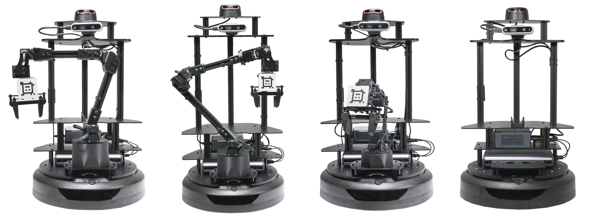

Interbotix X-Series LoCoBots
The Low Cost Robot (LoCoBot) is a mobile manipulator base that uses ROS-based open source packages to provide a platform to research facilities, university classrooms, and laboratories.
| Model Name and Store Link | Robot Documentation | Manipulator Documentation | Codename |
|---|---|---|---|
| LoCoBot Base | LoCoBot Base Documentation | N/A | locobot_base |
| LoCoBot PX100 | LoCoBot PX100 Documentation | PincherX-100 Documentation | locobot_px100 |
| LoCoBot WX200 | LoCoBot WX200 Documentation | WidowX-200 Documentation | locobot_wx200 |
| LoCoBot WX250 6DOF | LoCoBot WX250 6DOF Documentation | WidowX-250 6DOF Documentation | locobot_wx250s |
What’s Here
- Specifications - Specifications for the X-Series LoCoBots and related hardware.
- Getting Started - Guides to walk you through the process of setting up your X-Series LoCoBot.
- ROS Interface - Guides on how to use the ROS Interfaces.
- Python-ROS Interface - Guides on how to use the Python-ROS Interfaces.
- ROS Open Source Packages - Guides for each core and demo package in the ROS 1 Interface.
- Troubleshooting - Small guides to walk users through possible issues they may occur when using their LoCoBot.